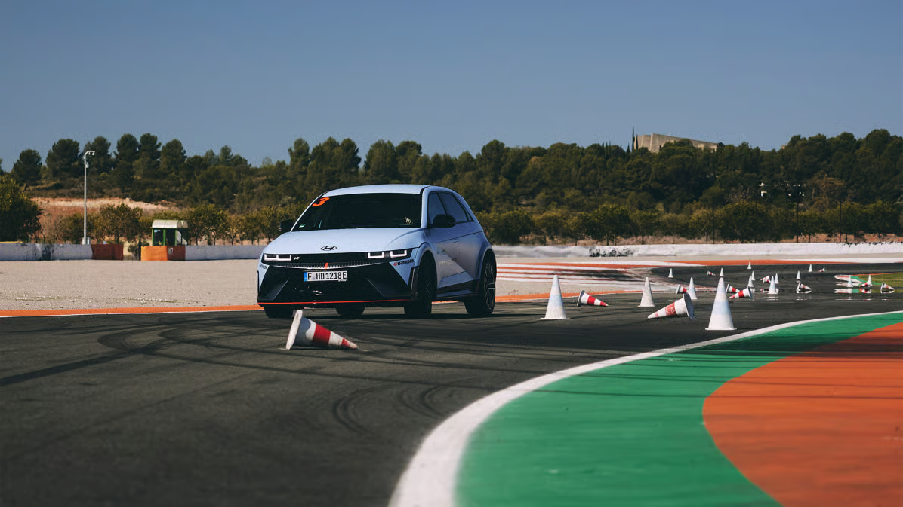
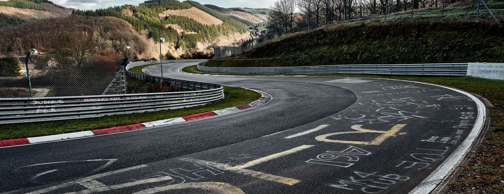

About N
Never just drive
Beyond driving, enjoy every moment.
N is more than transportation—it’s a brand that awakens the joy and passion of driving. With technology and expertise honed on the world’s most demanding motorsport stages, N delivers thrilling performance on everyday roads. Driving is not just about speed, but about savoring each moment, and N makes those moments unforgettable. Through constant challenge and innovation, N creates a new culture of excitement behind the wheel. Every time you take the wheel, N is there to make the journey extraordinary. Along the way, N fuels your passion and transforms everyday driving into a true adventure. With N, every moment on the road becomes a lasting memory.
HYUNDAI N
From Namyang to Nürburgring
-
Every high-performance N is born from the dedication and passion of Hyundai Motor’s researchers at the Namyang R&D Center.
Afterward, these high-performance vehicles undergo rigorous testing at Germany’s Nürburgring, one of the world’s most demanding racing tracks, to refine and perfect their technology. Through this process, N technology becomes more sophisticated, evolving into something new with every challenge.
N takes its name from the ‘N’ in Namyang and Nürburgring. Born in Namyang and honed at Nürburgring, the N logo was inspired by the curves of a racing track.
Namyang R&D Center
Korea - Namyang
The Namyang R&D Center in Korea is the core of Hyundai Motor’s global R&D network and the birthplace of the high-performance i30 N. Spread across more than 3.3 million square meters, the Namyang Center is equipped with diverse facilities and test tracks, serving as a think tank dedicated to the development of N high-performance vehicles.
Nürburgring Test Center
Germany - Nürburgring
The Nürburgring Nordschleife is where Hyundai N’s high-performance technologies are honed. This legendary 20.8 km track features 73 corners along with steep and dramatic ascents and descents, making it one of the most demanding racing circuits in the world. Elevations range from 320 m to 617 m, with a maximum difference of nearly 300 m, earning it the reputation as one of the most extreme driving environments on the planet.